数据层高可用
MySQL 5.7 主从同步与Keepalived高可用部署
一、部署环境说明
新部署两台CentOS 7服务器，实现MySQL 5.7主从同步+Keepalived双机热备高可用，具体节点信息如下：
- 主库（mysqlmaster）：IP 192.168.126.135，角色为MySQL Master、Keepalived MASTER
- 从库（mysqlslave）：IP 192.168.126.136，角色为MySQL Slave、Keepalived BACKUP
- 虚拟IP（VIP）：192.168.126.201（供外部应用访问，实现故障自动漂移）
- MySQL版本：5.7.44（指定版本，避免升级至8.0）
- Keepalived版本：CentOS 7默认版本（1.3.5）
二、前置准备（两台服务器均操作）
2.1 配置静态IP
编辑网卡配置文件，设置静态IP（主从库分别配置对应IP）：
# 编辑网卡配置文件（默认网卡为ens33）
vim /etc/sysconfig/network-scripts/ifcfg-ens33
# 核心配置参数（主库示例，从库替换IP为192.168.126.136）
BOOTPROTO=static
ONBOOT=yes
IPADDR=192.168.126.135
NETMASK=255.255.255.0
GATEWAY=192.168.126.2（按实际环境填写）
DNS1=8.8.8.8
# 重启网络服务使配置生效
systemctl restart network
# 验证IP配置
ip a✅ 验证结果：执行ip a后，ens33网卡显示配置的静态IP（主库192.168.126.135、从库192.168.126.136），即为配置成功。
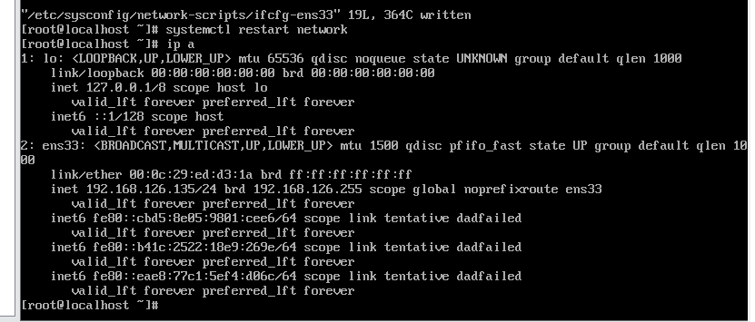
2.2 配置主机名
设置规范主机名，便于节点识别和后续配置：
# 主库设置主机名
hostnamectl set-hostname mysqlmaster
# 从库设置主机名
hostnamectl set-hostname mysqlslave
# 刷新生效（无需重启）
su✅ 验证结果：执行hostname后，主库输出mysqlmaster，从库输出mysqlslave，即为配置成功。
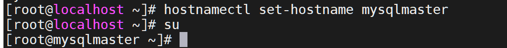
2.3 关闭防火墙
关闭防火墙，避免拦截MySQL主从同步、Keepalived通信端口：
# 立即关闭防火墙并禁止开机自启
systemctl stop firewalld && systemctl disable firewalld2.4 关闭SELinux
关闭SELinux，避免其限制MySQL和Keepalived的资源访问：
# 临时关闭（当前会话生效）
setenforce 0
# 永久关闭（重启生效）
sed -i 's/SELINUX=enforcing/SELINUX=disabled/g' /etc/selinux/config✅ 验证结果：执行getenforce，返回Permissive即为临时关闭成功，重启后返回Disabled为永久关闭成功。
三、安装MySQL 5.7（两台服务器均操作）
3.1 安装MySQL官方仓库
# 下载MySQL 5.7官方仓库rpm包
wget https://dev.mysql.com/get/mysql57-community-release-el7-11.noarch.rpm
# 安装仓库
rpm -ivh mysql57-community-release-el7-11.noarch.rpm
# 清理缓存并生成新缓存
yum clean all && yum makecache3.2 安装MySQL 5.7（指定版本）
指定5.7.44版本安装，避免默认升级至MySQL 8.0：
# 安装指定版本的MySQL服务和客户端
yum install -y mysql-community-server-5.7.44 mysql-community-client-5.7.44
# 若出现GPG校验失败，可执行以下命令（不推荐生产环境）
# yum install -y --nogpgcheck mysql-community-server mysql-community-client3.3 启动MySQL并设置开机自启
# 设置开机自启并立即启动MySQL
systemctl enable mysqld --now
# 查看MySQL运行状态
systemctl status mysqld✅ 验证结果：MySQL状态为active (running)，即为启动成功。
3.4 获取初始密码并重置
# 获取MySQL初始临时密码
grep 'temporary password' /var/log/mysqld.log
# 登录MySQL（输入上述获取的临时密码）
mysql -u root -p
# 重置root密码（密码需包含大小写字母、数字、特殊符号）
ALTER USER 'root'@'localhost' IDENTIFIED BY 'YourStrongPass123!';
# 刷新权限
FLUSH PRIVILEGES;
# 退出MySQL
exit✅ 验证结果：执行ALTER USER命令无报错，再次用新密码登录mysql -u root -p'YourStrongPass123!'成功，即为密码重置成功。
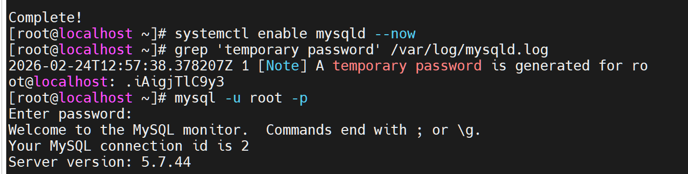
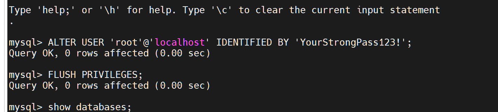
四、配置MySQL主从同步（主库→从库顺序操作）
4.1 主库（mysqlmaster）配置
4.1.1 备份原配置文件（安全规范）
# 备份my.cnf配置文件（带时间戳）
cp /etc/my.cnf /etc/my.cnf.bak.$(date +%Y%m%d_%H%M%S)4.1.2 编辑主库配置文件
# 编辑MySQL主配置文件
vim /etc/my.cnf在文件中添加以下配置（核心主从同步参数）：
# 主库唯一标识（从库必须不同，建议设为1）
server-id = 1
# ==================== binlog日志配置（主从复制基础）====================
log-bin = mysql-bin # 开启binlog日志，日志前缀为mysql-bin
binlog-format = row # binlog格式为row，避免数据不一致问题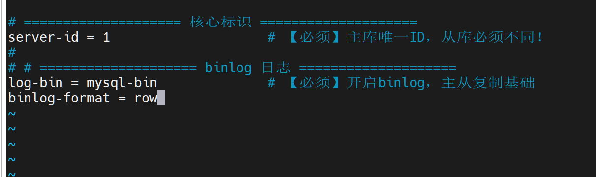
4.1.3 重启MySQL并创建复制账号
# 重启MySQL使配置生效
systemctl restart mysqld && systemctl status mysqld
# 登录MySQL（使用重置后的密码）
mysql -u root -p'YourStrongPass123!'
# 创建主从复制专用账号（允许从库所在网段访问）
CREATE USER 'repl'@'192.168.126.%' IDENTIFIED BY 'Repl@Pass2026!';
# 授予复制权限
GRANT REPLICATION SLAVE ON *.* TO 'repl'@'192.168.126.%';
# 刷新权限
FLUSH PRIVILEGES;
# 查看主库binlog状态（记录File和Position，后续从库配置必需！）
SHOW MASTER STATUS;✅ 验证结果：SHOW MASTER STATUS输出中，File为mysql-bin.000001，Position为771（以实际输出为准），即为配置成功。
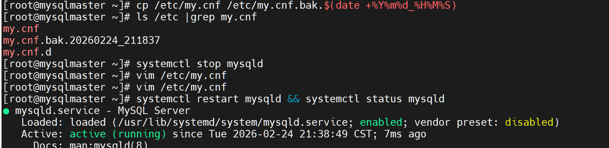
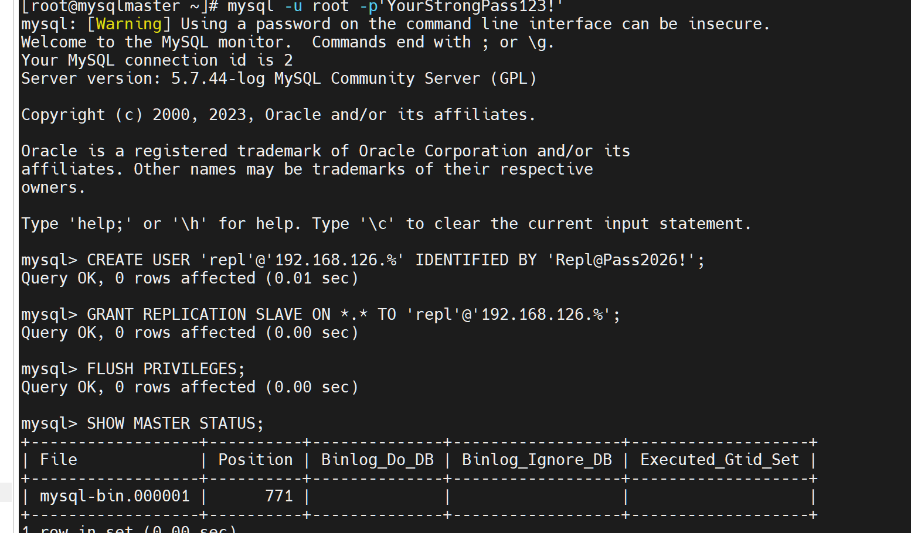
4.2 从库（mysqlslave）配置
4.2.1 编辑从库配置文件
# 编辑MySQL主配置文件
vim /etc/my.cnf在文件中添加以下配置（核心从库参数）：
# 从库唯一标识（必须与主库不同，建议设为2）
server-id = 2
# 从库只读（防止误写，提升数据安全性）
read-only = 1
# 开启中继日志（主从复制必需）
relay-log = relay-bin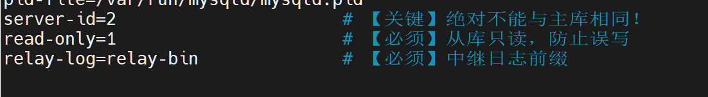
4.2.2 重启MySQL并配置主从连接
# 重启MySQL使配置生效
systemctl restart mysqld && systemctl status mysqld
# 登录MySQL（使用重置后的密码）
mysql -u root -p'YourStrongPass123!'
# 配置主从连接（替换以下参数为实际主库信息）
CHANGE MASTER TO
MASTER_HOST='192.168.126.135', # 主库IP
MASTER_USER='repl', # 主从复制账号
MASTER_PASSWORD='Repl@Pass2026!', # 复制账号密码
MASTER_LOG_FILE='mysql-bin.000001', # 主库binlog文件名（来自SHOW MASTER STATUS）
MASTER_LOG_POS=771; # 主库binlog位置（来自SHOW MASTER STATUS）
# 启动从库同步进程
START SLAVE;
# 查看从库同步状态（关键看Slave_IO_Running和Slave_SQL_Running是否均为Yes）
show slave status\G;✅ 验证结果：show slave status\G输出中，Slave_IO_Running=Yes、Slave_SQL_Running=Yes，即为从库配置成功。
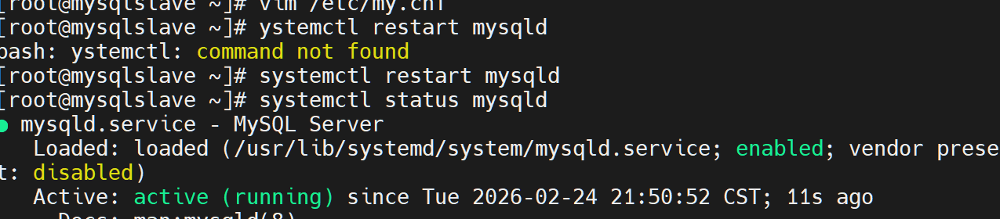
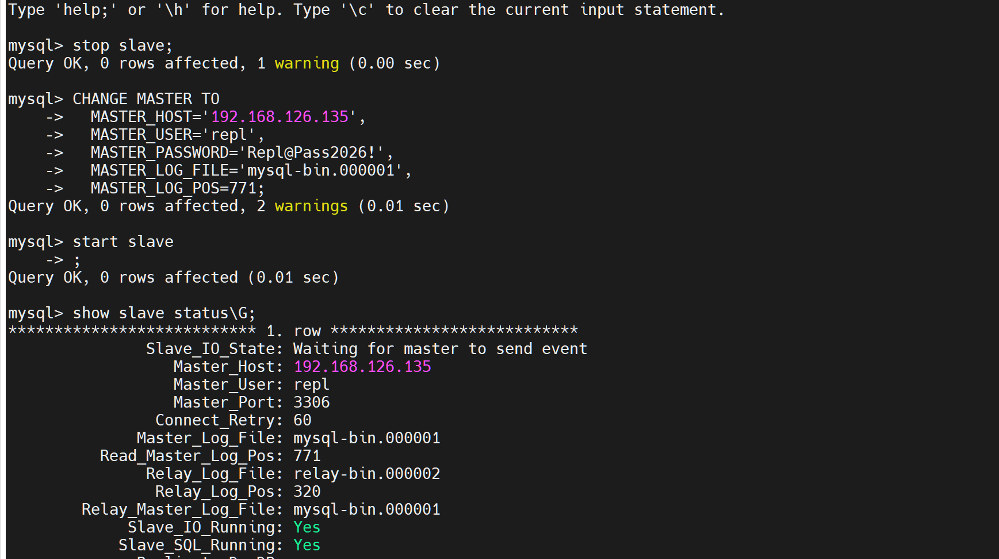
4.3 验证主从同步效果
# 1. 主库执行（创建测试数据库）
mysql -u root -p'YourStrongPass123!' -e "CREATE DATABASE test;"
# 2. 从库执行（查询数据库，验证同步）
mysql -u root -p'YourStrongPass123!' -e "SHOW DATABASES;"✅ 验证结果：从库查询结果中包含test数据库，说明主从同步生效，MySQL主从同步搭建完成。
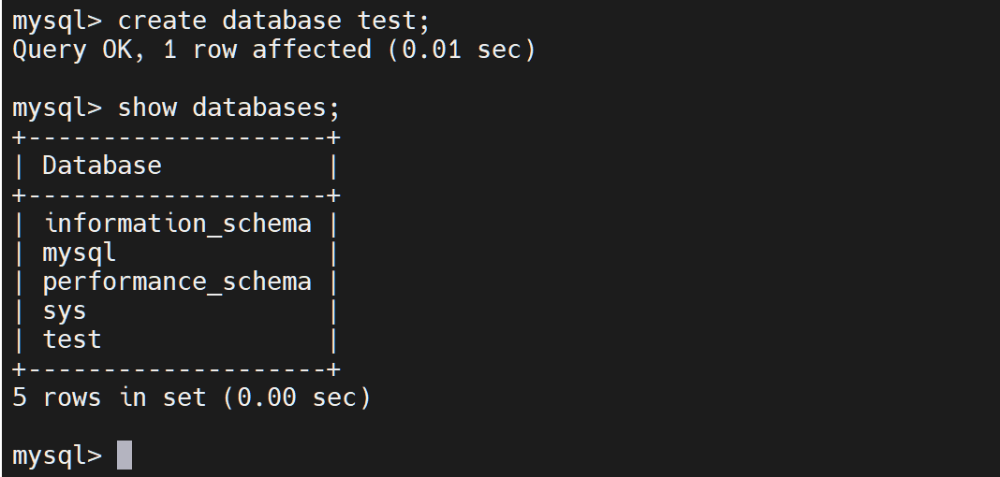
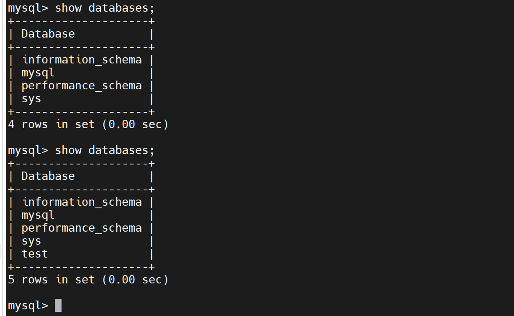
五、配置Keepalived高可用（两台服务器均操作）
5.1 安装Keepalived
# 安装Keepalived
yum install -y keepalived
# 创建脚本目录（用于存放健康检查脚本和触发脚本）
mkdir -p /etc/keepalived/scripts5.2 配置主库（mysqlmaster）Keepalived
5.2.1 编辑主库Keepalived配置文件
# 覆盖创建主库Keepalived配置文件
cat > /etc/keepalived/keepalived.conf <<'EOF'
# ==================== 全局配置 ====================
global_defs {
router_id MySQL_HA_MASTER # 主库唯一标识（从库需改为MySQL_HA_SLAVE）
}
# ==================== MySQL健康检查脚本 ====================
vrrp_script chk_mysql {
script "/etc/keepalived/scripts/check_mysql.sh" # 健康检查脚本路径
interval 2 # 每2秒执行一次检查
weight -5 # 检查失败时优先级降低5
fall 2 # 连续2次失败判定为服务异常
rise 1 # 1次成功即恢复健康状态
}
# ==================== VRRP实例配置（主库） ====================
vrrp_instance VI_1 {
state MASTER # 角色：主节点
interface ens33 # 绑定的物理网卡（与IP配置一致）
virtual_router_id 51 # 虚拟路由ID（主从必须相同，1-255）
priority 100 # 优先级（主库高于从库）
advert_int 1 # VRRP通告间隔（1秒）
# 认证配置（防非法节点加入，主从必须一致）
authentication {
auth_type PASS # 认证类型：密码
auth_pass MySQL_HA_2024 # 认证密码（1-8位）
}
# 虚拟IP（VIP）配置（外部应用访问此IP）
virtual_ipaddress {
192.168.126.201/24 # 虚拟IP，与集群同网段
}
# 关联MySQL健康检查脚本
track_script {
chk_mysql
}
# 主库故障时触发（释放VIP前执行）
notify_fault "/etc/keepalived/scripts/fault.sh"
}
EOF5.2.2 创建主库健康检查脚本与故障触发脚本
# 1. 创建MySQL健康检查脚本
cat > /etc/keepalived/scripts/check_mysql.sh <<'EOF'
#!/bin/bash
# MySQL登录信息（替换为实际密码）
MYSQL_USER="root"
MYSQL_PASS="YourStrongPass123!"
# 命令绝对路径（避免Keepalived找不到命令）
PGREP_CMD="/usr/bin/pgrep"
MYSQL_CMD="/usr/bin/mysql"
# 先检查MySQL进程是否存在
if $PGREP_CMD mysqld > /dev/null; then
# 再检查MySQL是否能正常连接
if $MYSQL_CMD -u${MYSQL_USER} -p"${MYSQL_PASS}" -e "SELECT 1;" > /dev/null 2>&1; then
echo "$(date): MySQL is running and accessible" >> /var/log/keepalived_mysql_check.log
exit 0 # 0=正常，Keepalived认为服务健康
else
echo "$(date): MySQL process exists but cannot connect" >> /var/log/keepalived_mysql_check.log
exit 1 # 1=故障，触发权重下调
fi
else
echo "$(date): MySQL process not found" >> /var/log/keepalived_mysql_check.log
exit 1 # 1=故障，触发权重下调
fi
EOF
# 2. 创建故障触发脚本（主库故障时记录日志）
cat > /etc/keepalived/scripts/fault.sh <<'EOF'
#!/bin/bash
echo "[$(date '+%F %T')] 主库MySQL故障！Keepalived将释放VIP" >> /var/log/keepalived_mysql_fault.log
EOF
# 3. 给脚本添加执行权限
chmod +x /etc/keepalived/scripts/*.sh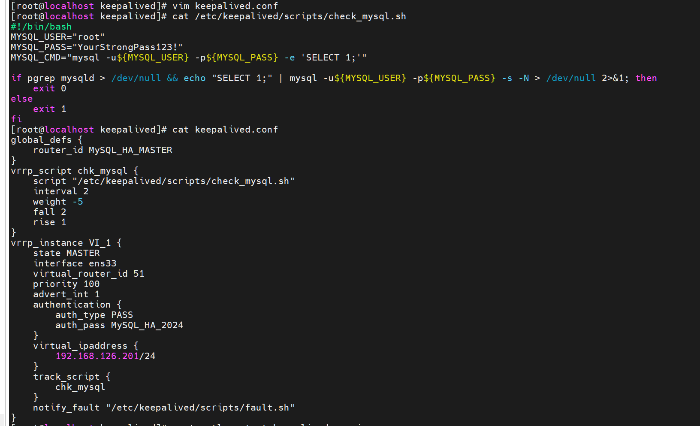
5.3 配置从库（mysqlslave）Keepalived
5.3.1 编辑从库Keepalived配置文件
# 覆盖创建从库Keepalived配置文件
cat > /etc/keepalived/keepalived.conf <<'EOF'
# ==================== 全局配置 ====================
global_defs {
router_id MySQL_HA_SLAVE # 从库唯一标识（与主库不同）
}
# ==================== MySQL健康检查脚本 ====================
vrrp_script chk_mysql {
script "/etc/keepalived/scripts/check_mysql.sh" # 与主库脚本路径一致
interval 2 # 每2秒执行一次检查
weight -5 # 检查失败时优先级降低5
fall 2 # 连续2次失败判定为服务异常
rise 1 # 1次成功即恢复健康状态
}
# ==================== VRRP实例配置（从库） ====================
vrrp_instance VI_1 {
state BACKUP # 角色：备节点
interface ens33 # 绑定的物理网卡（与主库一致）
virtual_router_id 51 # 与主库相同
priority 90 # 优先级低于主库（90<100）
advert_int 1 # 与主库一致
# 认证配置（与主库完全一致）
authentication {
auth_type PASS
auth_pass MySQL_HA_2024
}
# 虚拟IP（与主库完全一致）
virtual_ipaddress {
192.168.126.201/24
}
# 关联MySQL健康检查脚本
track_script {
chk_mysql
}
# 从库提升为主库时执行
notify_master "/etc/keepalived/scripts/master.sh"
# 从库恢复为备库时执行
notify_backup "/etc/keepalived/scripts/backup.sh"
}
EOF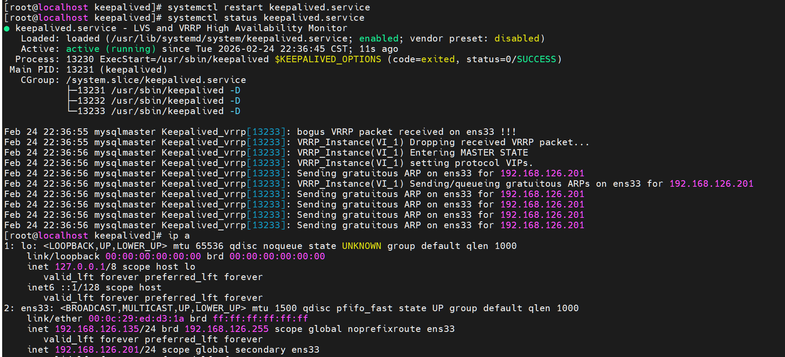
5.3.2 创建从库专属脚本
5.4 启动并验证Keepalived（两台服务器均操作）
✅ 验证结果：
- 主库（mysqlmaster）：ens33网卡除自身IP外，新增VIP 192.168.126.201，Keepalived状态为active (running)。
# 1. 创建MySQL健康检查脚本（与主库一致）
cat > /etc/keepalived/scripts/check_mysql.sh <<'EOF'
#!/bin/bash
MYSQL_USER="root"
MYSQL_PASS="YourStrongPass123!"
MYSQL_CMD="mysql -u${MYSQL_USER} -p${MYSQL_PASS} -e 'SELECT 1;'"
if pgrep mysqld > /dev/null && echo "SELECT 1;" | mysql -u${MYSQL_USER} -p${MYSQL_PASS} -s -N > /dev/null 2>&1; then
exit 0
else
exit 1
fi
EOF
# 2. 创建提升为主库脚本（从库接管VIP时执行，取消只读）
cat > /etc/keepalived/scripts/master.sh <<'EOF'
#!/bin/bash
echo "[$(date '+%F %T')] VIP漂移至本机，开始提升为Master..." >> /var/log/keepalived_promote.log
mysql -uroot -p'YourStrongPass123!' -e "STOP SLAVE;"
mysql -uroot -p'YourStrongPass123!' -e "SET GLOBAL read_only=0; FLUSH PRIVILEGES;"
echo "[$(date '+%F %T')] 提升完成！当前角色：Master" >> /var/log/keepalived_promote.log
EOF
# 3. 创建恢复为从库脚本（主库恢复时执行，开启只读）
cat > /etc/keepalived/scripts/backup.sh <<'EOF'
#!/bin/bash
echo "[$(date '+%F %T')] VIP离开本机，准备恢复为Slave..." >> /var/log/keepalived_demote.log
mysql -uroot -p'YourStrongPass123!' -e "SET GLOBAL read_only=1;"
echo "[$(date '+%F %T')] 已设置为只读。请人工确认主库恢复后执行：START SLAVE;" >> /var/log/keepalived_demote.log
EOF
# 4. 给脚本添加执行权限
chmod +x /etc/keepalived/scripts/*.sh# 重启Keepalived服务
systemctl restart keepalived
# 查看Keepalived运行状态
systemctl status keepalived
# 查看网卡IP（确认VIP分配情况）
ip a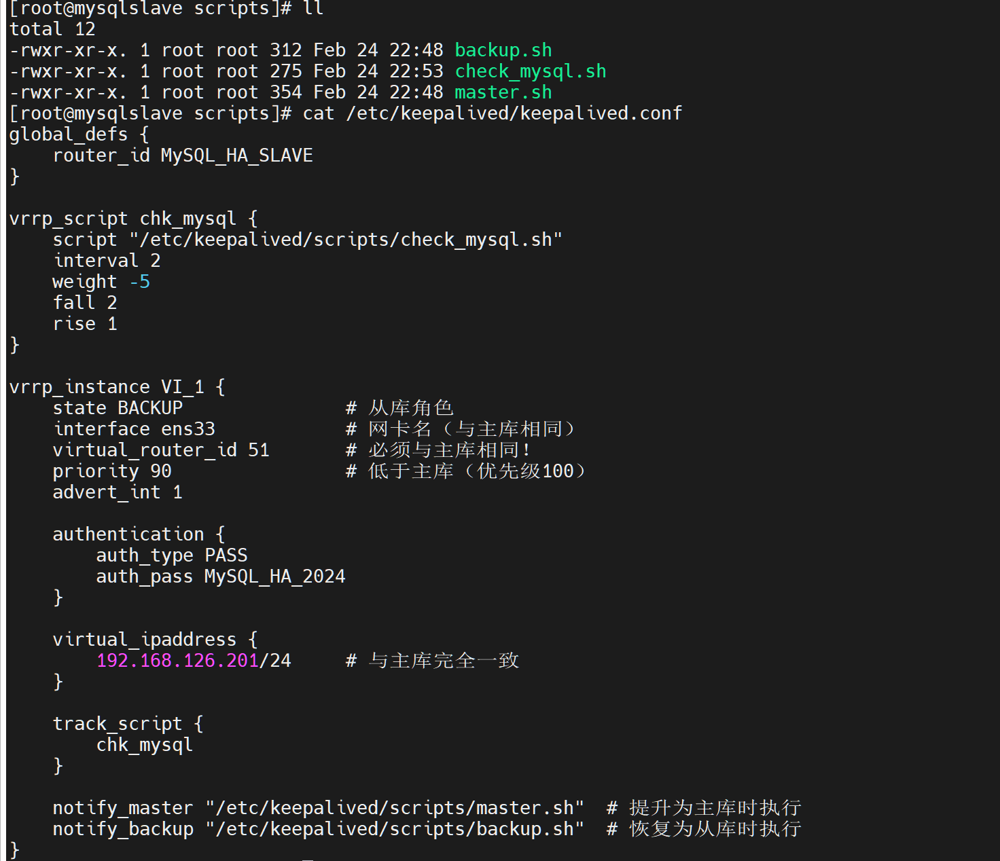
六、验证Keepalived高可用（故障漂移测试）
- 目前从库（mysqlslave）：仅显示自身IP 192.168.126.136，无VIP，Keepalived状态为active (running)。
6.1 模拟主库故障，测试VIP漂移
CentOS 7默认的Keepalived 1.3.5版本存在PASS认证bug，可能导致主从节点无法正常通信，导致vip无法迁移
解决方案：需要先禁用pass认证或者升级keepalived版本
这里我先禁用pass认证，修改其主配置文件释掉authentication认证块（我使用禁用认证的方法）
# 编辑Keepalived配置文件（主从库均操作）
vim /etc/keepalived/keepalived.conf
#
# authentication {
# auth_type PASS
# auth_pass MySQL_HA_2024
# }
# 重启Keepalived使配置生效
systemctl restart keepalived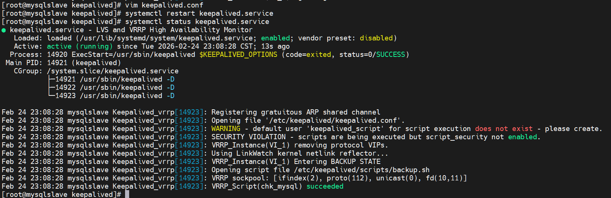
✅ 验证结果：
- 主库：ens33网卡仅保留自身IP 192.168.126.135，VIP已释放。
- 从库：ens33网卡新增VIP 192.168.126.201，成功接管VIP，实现故障自动漂移。
✅ 验证结果：能正常返回数据库列表（包含test库），说明从库接管成功，高可用生效。
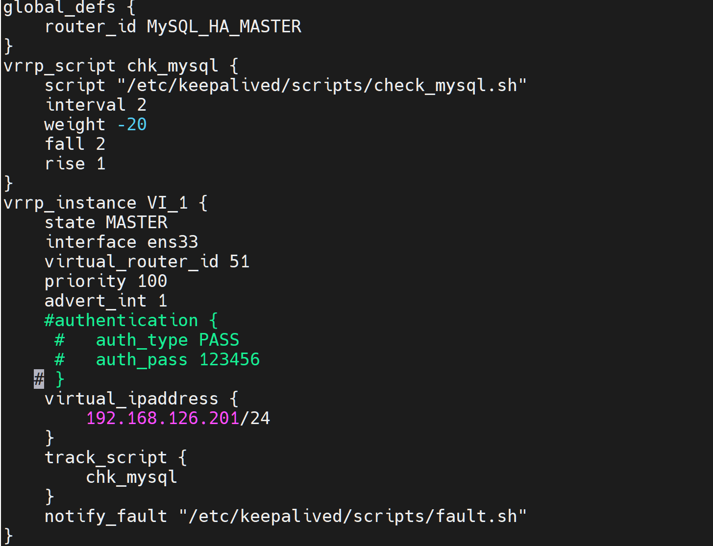
6.3 验证故障后VIP访问
# 任意节点执行（访问VIP，验证MySQL服务可用性）
mysql -u root -p'YourStrongPass123!' -h 192.168.126.201 -e "SHOW DATABASES;"七、部署总结
- ✅ 两台CentOS 7服务器基础配置（静态IP、主机名、防火墙、SELinux）
本次部署完成以下功能，均验证通过：
- ✅ MySQL 5.7.44版本安装与密码配置
- ✅ MySQL主从同步配置（主库binlog开启、从库中继日志配置，同步正常）
- ✅ Keepalived双机热备配置（主从节点角色、VIP 192.168.126.201配置）
- ✅ MySQL健康检查脚本配置（故障自动触发VIP漂移）
- ✅ 高可用验证（主库故障，从库成功接管VIP，服务正常访问）
本阶段成果
完成 MySQL 5.7 主从同步、binlog 配置与 Keepalived 高可用部署，数据层已经具备双节点冗余与故障切换能力。